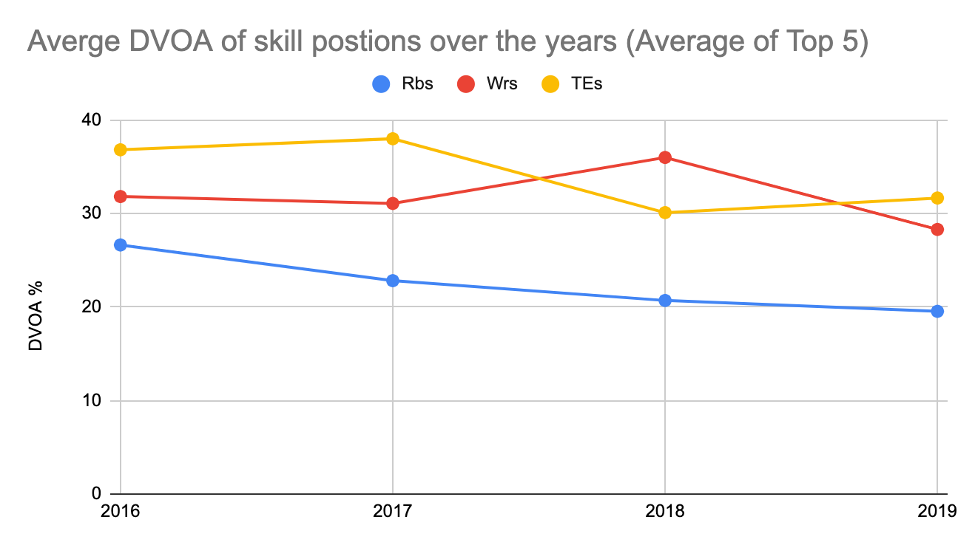

Are Running Backs Running Out of Time?
By Roshan Nagaram | November 29, 2020
On 9/1/2020, multiple reports came out that the New Orleans Saints were looking to trade Alvin Kamara due to disagreements over his potential contract extension. Kamara wasn’t the only one having trouble. Just recently Leonard Fournette was released, not even traded, by the Jacksonville Jaguars. Dalvin Cook on the Minnesota Vikings was still awaiting his own contract extension. These 3 running backs share 2 common factors with one another, they were at one point all exceptional running backs and they were all drafted in the 2017 draft class. How can it be then that only 3 years into their playing careers, the teams that drafted these elite players refuse to re-sign them to mega extensions as seen in other positions. It is no secret that the importance of the running back position has dwindled over the last decade. No team currently would ever consider trading all their picks for Ricky Williams, but twenty years ago that's just what the Saints did. Why is this true?

The answer lies in multiple factors. The first major factor being the lifespan of a running back. Running back and other high contact positions such as linebacker have shorter lifespans due to wear and tear. In fact the average lifespan of a Running Back is 2.57 years while the league average is 3.3 years. Due to the heavy contact, a single running back can no longer serve as the focal point of the offense unless that running back has pass-catching abilities. The reason for this can be explained by the fact that only a handful running backs have ever reached 370 carries in a season in all the years of the NFL without getting injured or becoming less productive. Coaches understand this and as a result have decided to build around more sustainable pieces such as the quarterback and offensive line. The second factor is the modern rule changes in the NFL. Fans want to see quarterbacks throw for 500 yards and have 40 point games. As a result, the rules favor the pass offense. Coaches have taken notice and as a result according to FiveThirtyEight “League Wide passing attempts per game have risen from 32.3 in 2008 to 34.2” in 2018. As the game continues to evolve, the running back just becomes less important to a team’s success. All of these factors lead to a crucial metric that encompasses the issue at hand: Wins above replacement. This metric is the reason why quarterbacks are paid the way they are and running backs paid the way they are. The average WAR for a running back is .1 according to PFF, that is the lowest among the skill positions. Furthermore, this value has the lowest variation, meaning the Running Back WAR is consistently low. For a better picture, the last two MVPs that were RB’s, Adrian Peterson and LaDainian Tomlinson had WAR of .3 and .34 respectively. For comparison the average WAR according to an MIT study of wide receivers was .28, meaning than average WR was almost just as valuable as a League MVP runnin back. With these data points available it makes sense that the value of Running Back is falling, but exactly how much it falls only time will tell.
So is there anything that running backs can do to increase their payday. The answer is going to obviously lie in the highest paid running back: Christian Mccaffrey, who makes 16 million a year. Why is he getting this much money? Simple, he is a wide receiver and a running back, and in the modern NFL offense that is what makes money. In his contract year of 2019, Mccaffrey had a whopping 116 receptions, a team high for the Panthers that season. Now you might be saying that those receptions were inflated due to quarterback dump offs. However, Mccaffrey despite where he caught the ball, was able to average an amazing 8.7 yards across those 116 receptions. This allowed him to have a 1000 yard receiving and rushing season. Keep in mind that only top Wr’s are expected to have 1000 yard receiving seasons. Mccafrey is special in that he does not only run the flat route but is also capable of running an efficient slant and post route. These abilities allowed him to be a focal point of the panthers offense. The Panthers saw this, fantasy owners saw this, and casual fans saw this. If running backs want to get those huge contracts they need to focus on extending their pass catching abilities. If they can do this, they can truly create something special, athletes who can catch the ball in space and using their built in elusiveness to gain yards after the catch. The era of the dual Wide Receiver - Running Back is upon us.